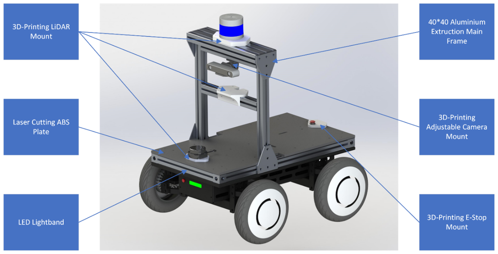
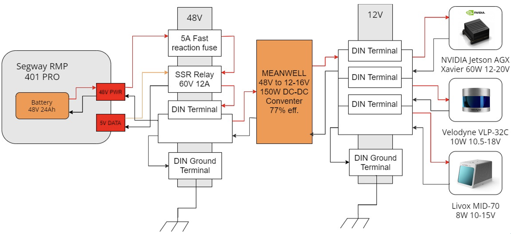
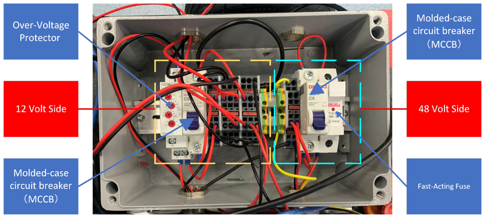
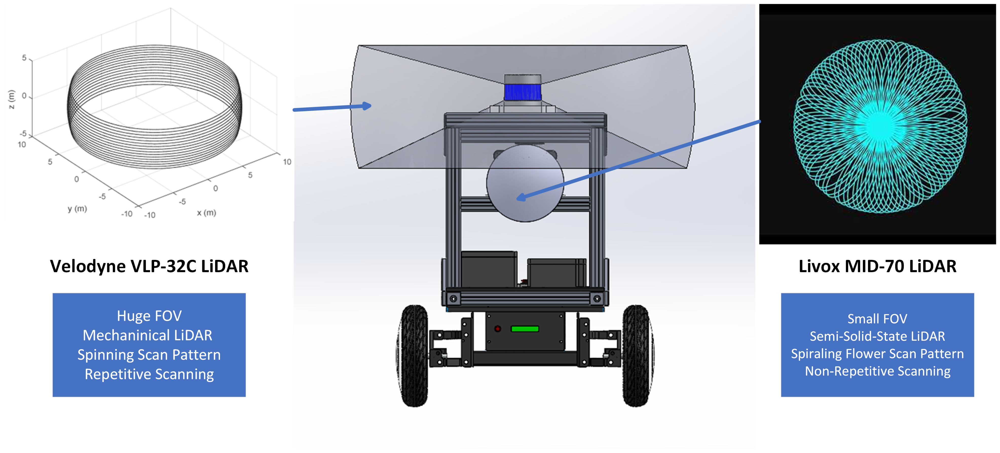
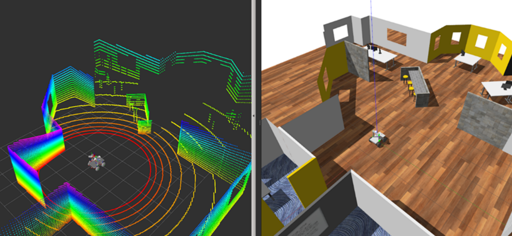
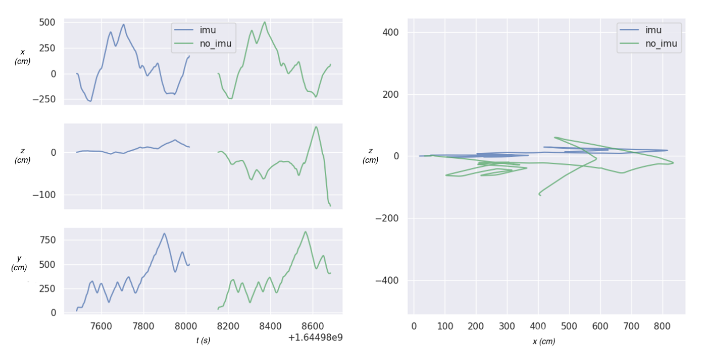
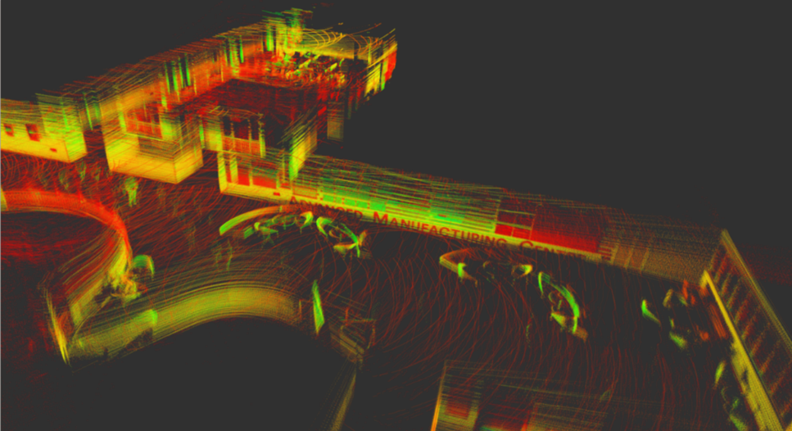
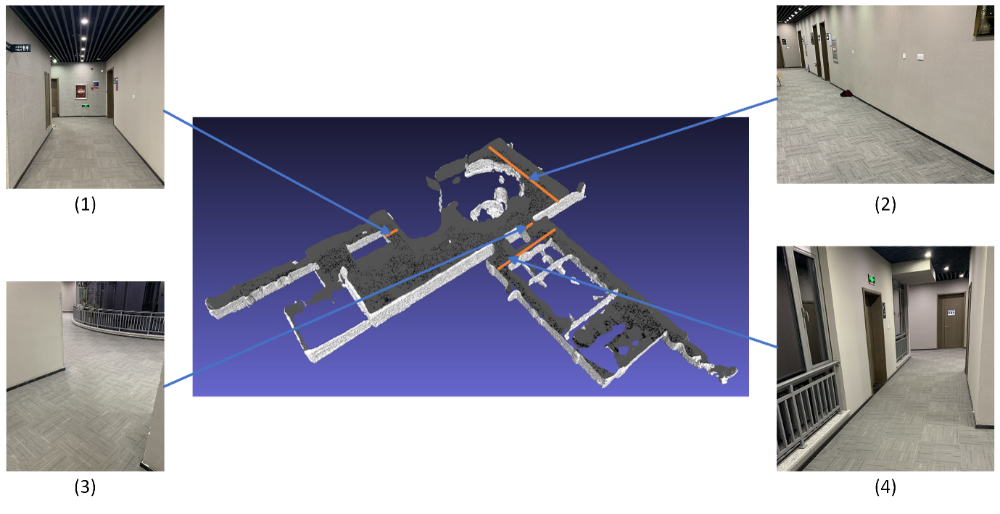
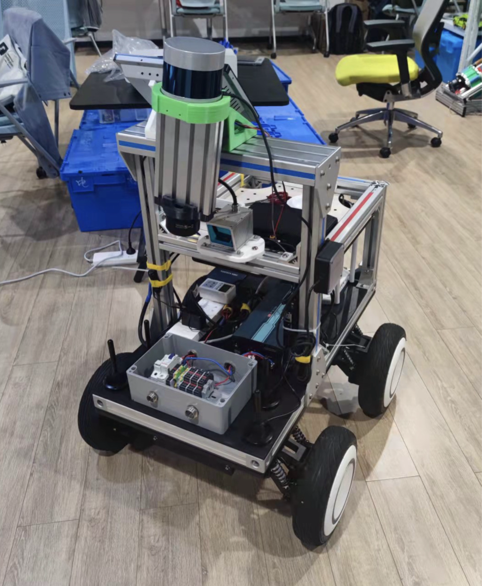

Abstract
Traditional as-built Building Information Modeling (BIM) is a costly, time-consuming and dangerous task. The use of robotics technology to automate this task is promising and valuable research.
Hardware
In order to achieve a robust, modular, and expandable design, the design of Carter 2.0 from NVIDIA is referenced.



A sensor fusion system was designed to enable the acquisition of dense environmental point clouds while preventing perceptual degradation in indoor environments.

Software
The Software is built upon ROS and the simulation environment is built in Gazebo .

The LiDAR Odometry and Mapping (LOAM) algorithm is modified from Ji Zhang’s original implimentation . To make full use of the spinning LiDAR and the solid-state LiDAR, the front end is modified to support multi-LiDAR fusion with a calibration matrix. Besides, IMU data is used in the ICP (Iterative Closest Points) scan matching for better localization and mapping performance (especially in dealing with drift in z-axis).

Results
Some reconstruction results at Sir David and Lady Susan Greenaway Building (IAMET), UNNC.


Finalized Design.

Credits
This project was funded by a $15,000 grant from Glodon , a leading digital building platform service provider.